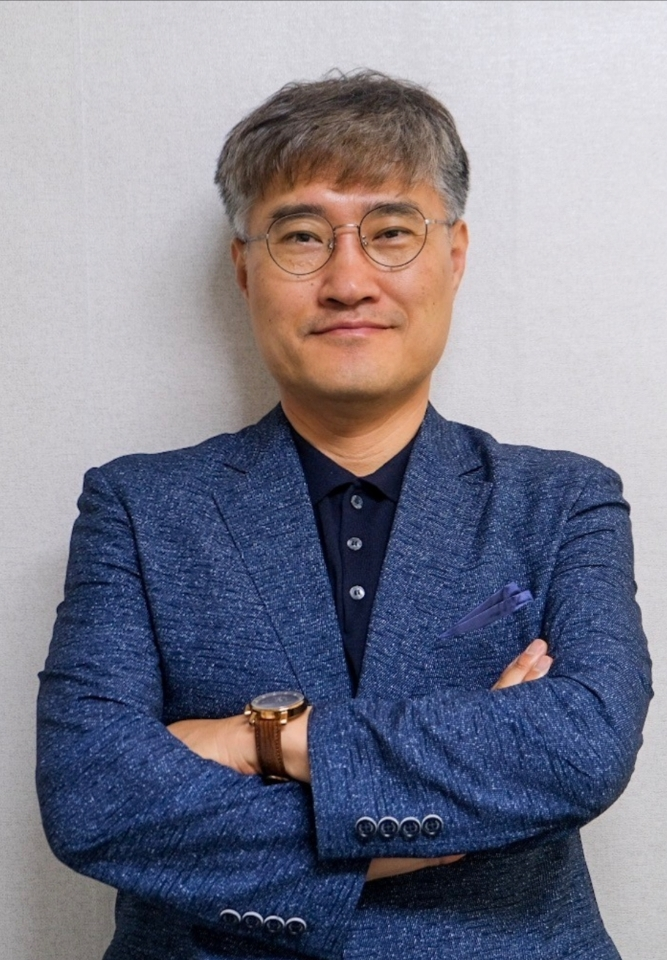

김규식 박사
상담전문영역
- 아동, 청소년, 성인의 트라우마 상담
- 가족과 부부상담
- 트라우마와 상담분야의 교육과 자격과정 실시
주요 프로필
- 현재) 영남신학대학교 상담심리학과 교수/학생상담센터 소장
- 경북대학교 상담심리 전공 석사와 박사
- 캐나다 벤쿠버 Trinity Western Univ. 상담심리대학원 Post Doc.
- Trinity Western Univ., Applied Counseling Program, Instructor
- Langley Community Services Society, Community Counselor
- Tri-City Area, SHARE, Community Counselor
- Human Solutions Inc., External Associate Clinical Counselor
- Dr. Kim's Counseling Clinic, Head Counselor
- 한국임상트라우마전문가협회 협회장
- 대구시교육청 학생징계조정위원장
- 경상남도 청소년 심리적 외상 긴급지원을 위한 자문위원
- 캐나다 상담 및 심리치료학회, 캐나다공인상담사(CCC, # 2146)
- 한국상담학회, 수련감독(# 205)
- 한국기독교상담학회 수련감독
- 한국임상트라우마전문가 자격과정 수련감독(# 01)
- 한국상담학회 총무이사/법인이사/감사 역임(2010-2020)
- 학교상담학회 트라우마/학술 위원장
- 대구․경북상담학회 학술위원장 및 이사
- 전문상담교사(임용), 청소년상담사, 전문상담사 출제위원 역임